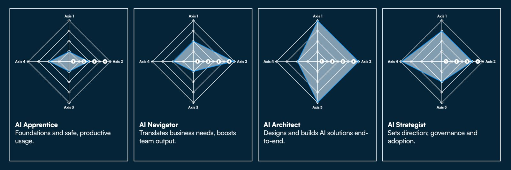

The AI Paradox: Sky-High Potential, Staggering Failure Rates
Enterprises today face an extraordinary contradiction. On one side lies the extraordinary promise of artificial intelligence, a technology expected to add $13 trillion in global economic activity and boost global GDP by 16% by 2030. Early adopters have already demonstrated the scale of this potential, with organizations saving tens of thousands of work hours, accelerating information processing by up to 50%, and unlocking productivity levels previously thought unattainable. The strategic mandate is clear: the vast majority of business leaders now acknowledge that failing to invest in AI today could threaten the long-term viability of their organizations.
Yet, on the other side and despite this clarity of purpose, the results tell a very different story. Between 80% and 85% of corporate AI projects fail to meet their objectives, a rate roughly double that of conventional IT projects. Other studies paint an even starker picture - 95% of implementations fail to generate a positive return on investment, and nearly two-thirds are abandoned within the first year.
The chasm between AI’s potential and its performance is not just a technological gap, it is a systemic failure of execution.
Deconstructing the Failure: It’s a People Problem, Not a Tech Problem
When dissecting these failures, the common thread isn’t faulty algorithms or subpar infrastructure. It’s people.
The introduction of AI into the workplace has created what psychologists describe as “AI anxiety,” a dual fear encompassing both the threat of job replacement and the feeling of inadequacy in keeping up with evolving technology. This anxiety isn’t a passive emotion; it directly leads to emotional exhaustion, loss of motivation, and disengagement.
The workforce, intended to be empowered by AI, instead becomes drained by it - mechanized in spirit long before automation arrives. This psychological resistance is compounded by flawed implementation strategies, where AI programs are driven top-down from boardrooms without considering the day-to-day realities of frontline teams. While executives overwhelmingly believe AI will boost productivity, a majority of employees fear it will actually make them less productive.
The result is a vicious cycle: leadership pressures teams to deploy AI quickly to achieve returns, without sufficient investment in workforce readiness. The undertrained and anxious workforce underperforms, the technology fails to deliver, and leadership becomes more skeptical about investing in “soft” areas like training and change management. By focusing on the tools rather than the users, organizations guarantee that AI’s transformative potential remains unrealized.
The Strategic Shift to Persona-Driven Learning
Why “One-Size-Fits-All” Training Fails
The traditional model of corporate training (generic, one-size-fits-all programs) is particularly ill-suited to AI. Such programs cannot cater to the vast range of roles, skill levels, and needs found across a modern enterprise. This leads to predictably low engagement, with some platforms reporting participation rates as low as 10%, and growing dissatisfaction as over one-fifth of employees feel their professional development needs go unmet.
These programs appear convenient and cost-effective, but the reality is that they rarely deliver meaningful skill acquisition or behavioral change. The result is wasted investment and an unprepared workforce.
The Power of Personalization
Personalized, role-based learning represents a fundamentally different approach. By designing learning experiences around specific user personas, organizations can tailor examples, formats, and applications to reflect real work contexts. Learners see immediate relevance, and the organization reaps measurable performance gains.
Research consistently shows that interactive, simulation-based training - one of the hallmarks of personalized learning - drives confidence and retention dramatically. Learners trained through such methods are multiple times more confident in applying new skills and complete training significantly faster than in traditional formats.
The Kubicle AI Persona Framework
A structured approach to this personalization can be found in Kubicle’s AI Persona Framework, which segments the workforce into four core personas: the AI Apprentice, the AI Navigator, the AI Architect, and the AI Strategist. Each persona represents a distinct relationship with AI, ranging from foundational understanding to executive-level strategy, and enables organizations to deliver targeted, efficient, and meaningful learning.
This approach is not simply about engagement. It also mitigates risk. Poorly implemented AI introduces dangers such as intellectual property breaches, biased decision-making, data privacy violations, and exposure to AI-driven cyber threats. A persona-based approach ensures each group receives the right training for its responsibilities: Navigators learn safe data handling, Architects learn to design responsible systems, Apprentices learn to identify misinformation, and Strategists learn to navigate regulatory and ethical obligations. The framework transforms training from a learning initiative into an integral part of governance, risk, and compliance.
Architecting Your AI-Ready Workforce

1. The AI Apprentice: Building the Foundation
The Apprentice is at the start of their AI journey. Their main goal is to develop confidence and fluency - understanding core AI concepts, basic tools, and responsible use. Effective training focuses on demystifying AI, alleviating anxiety, and creating a shared organizational language around the technology. A critical mass of Apprentices builds a base of AI fluency that enables collective progress.
2. The AI Navigator: Driving Productivity and Efficiency
Navigators focus on applying AI practically to their workflows. They are the main drivers of near-term productivity gains, often saving several hours each week by automating tasks like summarizing data or generating communications. Their training should focus on hands-on use of AI tools within daily work, coupled with strong guidance on privacy and compliance.
3. The AI Architect: Designing Custom Solutions
Architects are the technical backbone of an AI-first organization. They design and integrate AI systems that align with business goals. Their training must develop deep technical expertise -data governance, model validation, system integration, and bias detection. They transform the company from a consumer of AI tools into a creator of proprietary, competitive solutions.
4. The AI Strategist: Setting Vision and Governance
Strategists sit at the intersection of leadership, ethics, and law. They define the enterprise AI vision, oversee adoption, and ensure compliance with rapidly evolving global regulations such as the EU AI Act. Their training focuses on governance frameworks, risk management, and stakeholder trust. In a world where non-compliance can result in multimillion-euro fines, the Strategist’s role is critical to survival.
A balanced distribution of these four personas is essential. Too many Navigators without Architects or Strategists leads to short-term efficiency but long-term vulnerability. Too many Strategists without Apprentices or Navigators leads to vision without execution. The persona model provides leaders with a clear diagnostic tool for assessing workforce maturity and ensuring balance across AI capability tiers.
Implementing the Persona Framework
Step 1: Assess and Segment Your Workforce
Begin with deep discovery (surveys, interviews, and behavioral data) to map current skills, attitudes, and readiness levels. This process is both diagnostic and cultural, signaling to employees that their perspectives are valued and transforming potential resistance into early engagement.
Step 2: Design Tailored Learning Journeys
Develop training that matches each persona’s needs. Apprentices benefit from microlearning and introductory sessions; Navigators thrive with scenario-based and just-in-time training; Architects and Strategists need advanced masterclasses. AI-driven role-play simulations can be powerful across all personas, providing safe environments to practice skills and explore complex ethical or technical scenarios.
Step 3: Foster a Culture of Continuous Learning
AI adoption is not a single event but an ongoing evolution. Leaders must clearly communicate the purpose behind AI initiatives and model a mindset of lifelong learning. Research shows that when leaders listen, support, and create psychological safety, they can significantly reduce AI-related anxiety and inspire engagement.
Step 4: Measure What Matters
Replace vanity metrics with persona-aligned KPIs. Measure productivity gains for Navigators, solution success rates for Architects, compliance milestones for Strategists, and confidence or engagement levels for Apprentices. Continually refine the program through data and feedback to ensure relevance as both the technology and organization evolve.
Conclusion: Building a Resilient, AI-First Organization
The persistent failure of enterprise AI initiatives is not a technological inevitability. It is a human one. True AI readiness does not come from purchasing software but from cultivating capable, confident people. The persona-based model offers a strategic, evidence-based path toward achieving this goal.
AI literacy must now be viewed as a business imperative, not an optional training exercise. It influences productivity, innovation, compliance, and reputation, and plays a pivotal role in an organization’s Environmental, Social, and Governance (ESG) posture. A robust AI literacy strategy demonstrates social responsibility in managing workforce transitions and governance integrity in handling the ethical and legal dimensions of AI.
The mandate for leaders is clear: move beyond the outdated one-size-fits-all approach. Understand your workforce, personalize their learning, and design a future where humans and AI collaborate to create meaningful, sustainable, and scalable value.
For more information on how Kubicle supports companies establish a competitive edge through AI upskilling, contact us today.